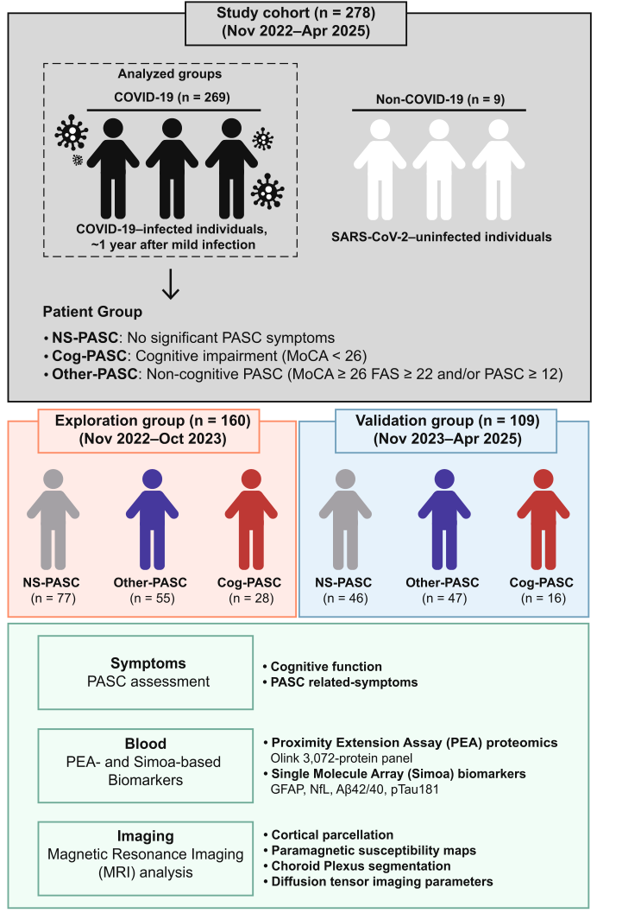
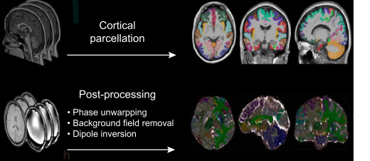

Brain Alterations in Cognitive Long COVID
Neurodegenerative processes in cognitive impairment associated with post-acute sequelae of COVID-19 (PASC).
Overview
Brain changes have been reported after COVID-19, but it was unclear how common they are and whether they reflect neurodegeneration. This study followed individuals about one year after mild COVID-19 and compared those with cognitive impairment (Cog-PASC), those with other, non-cognitive symptoms (Other-PASC), and those without significant symptoms, using brain MRI and blood proteomics across exploration, covariate-matched, and independent validation cohorts (278 participants in total).

What I did
- Performed MRI analysis including cortical parcellation, paramagnetic susceptibility (QSM / chi-separation) mapping, choroid plexus segmentation, and diffusion tensor imaging parameters
- Quantified glymphatic imaging markers (DTI-ALPS index, choroid plexus volume) across groups

Key findings
- Cog-PASC showed cortical thinning in the cingulate and insular cortices and increased paramagnetic susceptibility in the hippocampus
- Enlarged choroid plexus volume and elevated astroglial and neuronal damage-associated blood proteins in Cog-PASC
- Findings were reproduced in an independent validation cohort, and were not observed in other PASC subtypes
Publication
D. Seo†, Y. Choi†, E. Jeong, et al. Distinct brain alterations and neurodegenerative processes in cognitive impairment associated with post-acute sequelae of COVID-19. Nature Communications, 16:10552, 2025. [DOI]
Figures reproduced from the publication above (open access, CC BY). † Co-first author.